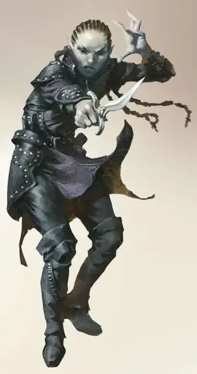

Торговец душами
Soul Monger
Средний Гуманоид (Эльф), нейтральный

Класс Доспеха 15 (проклёпанный кожаный доспех)
Хиты 123 (19к8 + 38)
Скорость 30 футов
| мод | спас | ||
|---|---|---|---|
| СИЛ | 8 | −1 | −1 |
| ЛОВ | 17 | +3 | +7 |
| ТЕЛ | 14 | +2 | +2 |
| мод | спас | ||
|---|---|---|---|
| ИНТ | 19 | +4 | +4 |
| МДР | 15 | +2 | +7 |
| ХАР | 13 | +1 | +5 |
Навыки Восприятие +7
Иммунитет к урону некротическая энергия, яд
Иммунитет к состояниям очарование, испуг, истощение
Чувства тёмное зрение 60 футов, пассивное Восприятие 17
Языки Общий, Эльфийский
Опасность 11 (7200 опыта)
Бонус мастерства +4
Особенности
Наследие фей. Торговец душами совершает с преимуществом спасброски от очарования, и магия не может его усыпить.
Врождённое колдовство. Базовой характеристикой торговца душами является Интеллект (Сл спасброска от заклинания 16, +8 к попаданию атаками заклинаниями). Он может накладывать следующие заклинания, не нуждаясь в материальных компонентах:
• Неограниченно:леденящее прикосновение (3к8 урона) [chill touch], ядовитые брызги (3к12 урона) [poison spray]
• 1/день каждое: проклятие[bestow curse], пляшущая молния [chain lightning], перст смерти [finger of death], газообразная форма [gaseous form], воображаемый убийца [phantasmal killer], притворство [seeming]
Сопротивление магии. Торговец душами совершает с преимуществом спасброски от заклинаний и прочих магических эффектов.
Жажда душ. Когда торговец душами опускает хиты существа до 0, он получает временные хиты в количестве половины от максимального значения хитов поражённой цели. Пока торговец душами обладает временными хитами, полученными этой способностью, он может совершать с преимуществом броски атаки.
Бремя поколений. Каждый зверь или гуманоид, отличный от шадар-каев, начинающий свой ход в пределах 5 фт. от торговца душами, получает понижение скорости на 20 фт. до начала своего следующего хода.
Действия
Мультиатака. Торговец душами совершает две атаки призрачным кинжалом.
Призрачный кинжал. Рукопашная атака оружием: +7 к попаданию, досягаемость 5 фт., одна цель. Попадание: 13 (4к4 + 3) колющего урона, плюс 19 (3к12) урона некротической энергией, после чего цель совершает с помехой спасброски до начала следующего хода торговца душами.
Волна утомления (перезарядка 4-6). Торговец душами испускает утомление в 60-фт. кубе. Каждое существо в этой области должно пройти спасбросок Телосложения Сл 16. В случае провала существо получает 45 (10к8) урона психической энергией, после чего получает 1 уровень Истощения. В случае успеха, существо получает 22 (5к8) урона психической энергией и не страдает от истощения.
Описание
В вечном мраке сумрака живёт общество, прислуживающее Королеве Воронов. Они были принесены в это тёмное царство в прошлые века так давно, что теперь они идеально адаптировались к этой угрюмой среде, как физически, так и умственно.
Хранители душ. Шадар-кай наблюдает за Цар- ством Теней и материальным миром, разыскивая души и трагические события, которые могут порадовать их божество. По слухам, они способны повлиять на мировые события трагическим образом ради её удовольствия. Тем не менее, королева Ворона представляет загадку даже для своих самых преданных последователей. Усилия шадар-кай вознаграждаются только неопределёнными предзнаменованиями, которые они интерпретируют, как только могут.
Проклятые эльфы. Шадар-Кай когда-то были эльфами, но миллиарды лет воздействия изнури- тельной среды обитания Царства Теней сделали их печальными и угрюмыми созданиями. В этом измерении, они имеют вид высохших эльфов: светлые волосы, морщинистая серая кожа и опухшие суставы дают им трупоподобный внешний вид. Они выглядят более молодыми в других планах, но их кожа всегда сохраняет свою мертвецкую бледноту. Они надевают тёмные плащи и тяжёлые маски, ненавидят зеркала и избегают тех вещей, что напоминают им о собственном возрасте.
Торговец душами. Отчаявшиеся от утраты воспоминаний о более ярких временах, торговцы душами жаждут жизненной силы других существ. Болезненная пустота внутри торговца душами излучается наружу, проявляя себя невыносимым бременем, истощающим любого несчастного, находящегося в его присутствии. Те, кто избегает натиска торговца душами, едва могут припомнить звук, который он издаёт...стон замученной души, потерявшейся в бездонной трагедии.